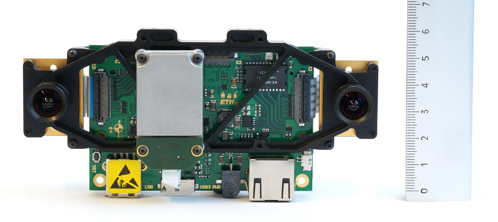
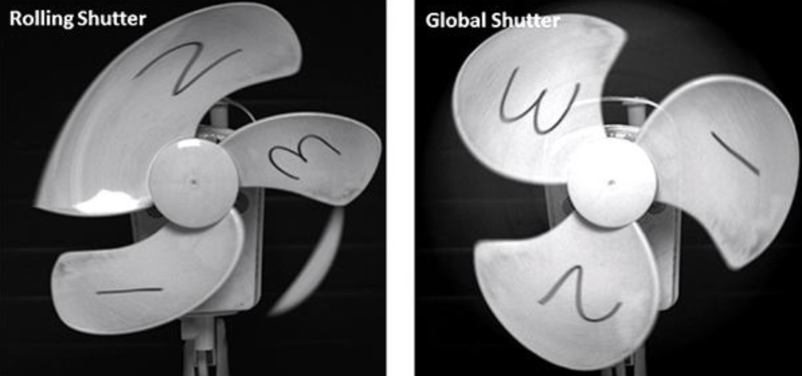
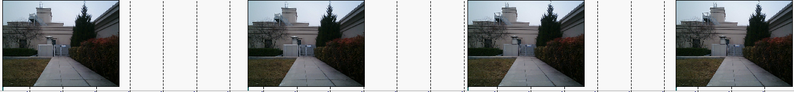
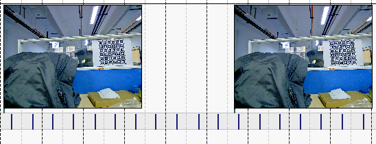
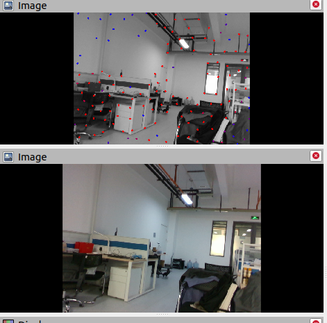
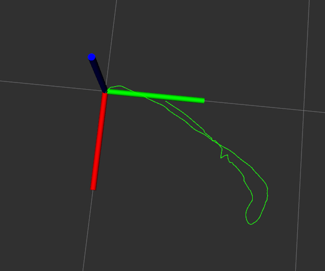

记录最近两个月的GVIO硬件搭建经历
有些日子没更新blog了，过年期间发生了很多事情，笔者的科研进度一度陷入停滞，近期重心逐渐转移到毕业上了；
自去年12月底初步实现idea之后，一直想把这个G-V-I odom的idea在实体车上进行实验，但是硬件平台搭建过程中遇到的麻烦超乎我的想象；
这周主要处理多传感器同步的问题，另外，简单草拟了一下毕业论文的大纲
今天晚上，第一次成功采集到真实世界的数据，并成功跑通V-I-O（月黑风高，明天再去采集含有GNSS的数据）；
趁着周末，忙里偷闲总结一下最近几个月搭建硬件平台的经历。
绪论
笔者的idea涉及的sensor主要有单目RGB camera、惯导IMU、GNSS，另外还需要一个搭建一个厘米级精度的真值系统（1-2cm）
在此基础上，需要对各传感器硬件进行选型，并搭建一个运动底盘；
一、VI sensor 选型
1.调研VI sensor成品
visual-IMU传感器，顾名思义，这是一个可以同时采集IMU和camera数据的传感器，笔者一开始调研了市面上成品的VI sensor，发现了HKUST（港科大）发的paper中使用最多的这款：

这款sensor 使用的camera传感器是MT9V034，好巧不巧，笔者本科做智能车竞赛用过这款相机，性能还是很可以的，IMU是ADIS16488，属于车规级IMU了，中档水平，精度是足够的，但是遗憾的是这款VI sensor已经停产并停售了，笔者在二手市场也没找到。
继而，笔者考察了一下市面上在售的VI sennsor，主要有这两大类：
–进口货：以Realsense d435i/d455和ZED为代表；IMU普遍精度不高，价格昂贵，例如d435i要2200+，d455要3000+
–国产货：小觅相机、INDEMIND双目VI模组，其中INDEMIND号称图像能到200fps，好家伙，不过没啥用，因为SLAM根本用不到这么高的频率（你能采，但我没地存啊），价格相对便宜，但是我觉得他们的IMU精度都太差了，会影响我idea的performance。
2. 自制VI sensor
既然如此，不如使用分立器件自己搞一个VI sensor，说干就干，考虑到性能和钱包（其实是老板钱包）的承受能力，选择了以下两个传感器：
-国产 Astra Pro 相机(About 900CNY)
-国产 飞迪航空IMU Delta10系列（200+ CNY），主要是青睐于它的精度，比MPU6050/9250之流好太多了
到货、驱动测试、装车、相机内参标定、V-I联合标定、上4号楼天台测试…..
结果可想而知，VIO连初始化都不能正常完成，或者初始化可以完成，但是轨迹不对，过一会算法就down了，查询了相关的资料，发现问题可能是因为相机快门类型的问题，Astra Pro是卷帘快门，在汽车高速运动状态下会产生画面撕裂或“果冻图像”，如下图所示。

虽然我并没有发现采集的图像有什么问题（也没出现果冻状啊！！）

在某个大佬的博客下面看到：多传感器需要做时钟同步，因此我还需要一个可以外触发的相机
3. 研究全局快门问题
为了找一个全局快门的相机，我调研了目前市面的相机，发现全局快门一般都用在工业相机上，因此选择了两款工业相机，分别是800+CNY和400+CNY的，依旧是到货、解决驱动、标定、上天台测试；
这次，相机的效果更烂，具体表现是：日光灯下噪点非常明显，

噪点对视觉特征提取可以说是致命的，因为噪点周围的图像具有良好的梯度，导致大部分特征点都提取在噪点上了emmmm,我无语了
4.研究GNSS、Visual、IMU三个传感器的时钟同步
自己做传感器的时钟同步（毫秒级别/几十毫米级）是一个很麻烦的事情，在调试期间，我学习了很多传感器同步的理论、方法，目前业界常用的是基于PTP、NTP的手段，通过网络传输使系统内所有时钟保持高精度同步，但是支持PTP/NTP的相机、IMU非常昂贵（好几千+），如果找老板报销他肯定让我出去，并且用身体团成一团的方式。所以这个路子可能不行，因此我决定退而求其次，使用PPS+GPRMC+单片机产生硬件触发信号触发相机采集，具体的思路是：
（1）PPS+GPRMC提供全局时钟基准，用于校正全局时钟
（2）ROS设置两个定时器，其中一个设置为200Hz,用于触发IMU采集数据；另一个设置为20Hz,用于向单片机串口发送数据，单片机中断接收的数据后，立刻向相机触发采集信号，ROS端收集数据后，使用全局时钟为数据打上时间戳，实现GVI三个传感器的同步
现实打脸来的太突然了，上述方案可行的前提是：通信无延迟或者延迟很小（ns级），但事实上，每一个过程的延时都是毫秒级的，这是无法忍受的，我测了几个典型的延时：
（1）ROS定时器到时间后向IMU发送采集指令，IMU接受到串口数据后开始解析，解析完成后为IMU消息打上时间戳发布出去，这个过程中的延时大约为4.8ms（200Hz的采样频率意味着需要每隔5ms采集一个IMU数据，而IMU数据从采集到触发的延时就有4.8ms，这根本没法用）
（2）两个定时器不是同步触发的，后启动的ROS定时器大约有0.15ms的延时
（3）其他的延时我没测，但是我觉的【ROS触发采集指令 -> 单片机解析并触发采集信号 -> 相机曝光 -> 数据传回ROS】这个过程的时间更长，可能要十几乃至几十毫秒。这就是说，当我接收一帧图像已经是十几ms前的了，同时落盘的IMU可能已经是数帧之后的了。
5. 人间归途：钞能力
我在B站、上交大的论文中看到了他们的机器人用的VI sensor都是Realsense d435i/d455，抱着试一试又不要钱、顶多出个运费险的思想，买了Realsense d435i，昨天下午收到货，今天上午和下午解决了SDK和ROS wrapper的问题，晚上在教研室简单溜达了一圈，跑了一下VINS，结果效果出奇的好用。
ε=(´ο｀*)))唉，还得是花钱，自己折腾太费事了！！
放一个效果图吧


总结一下吧，主要卡的问题就是IMU和camera的时钟同步的问题，如果不能很好的解决时钟同步，外参始终都不能标好，系统鲁棒性也很差
时钟同步最好是硬件原生支持时钟同步（PTP NTP协议），这种情况是最好的。
早知道我早就买一个D435i了，笔者已哭晕在厕所。。。。
二、GNSS sensor选型
GNSS传感器的选型目前没遇到什么问题，因为笔者没有心疼钱，直接一步到位买了ublox f9p，1000+CNY吧，还是工包的
搭配HKUST的ublox_drive食用，风味更佳；再次向HKUST 沈老师团队表示感谢！
三、真值系统
真值系统拟采用RTK实现，经过查询，本地政府似乎没有部署NTRIP基站（或者保密、或者我不知道），羡慕Hongkong等地的科研高校，这点来看，还是abroad的科研大环境更好。
目前我也没有精力个人搭建RTK基站
所以目前的方案是使用国内NTRIP服务的供应商
说到这里，不得不吐槽千寻知寸的定价为什么这么贵，日包还要好几十！！！
四、运动底盘
现在用的这个底盘，哎呀，一言难尽，这个底盘只适合在室内用，一到室外就拉稀了。
现在只能是在室外做，因为我没有室内的真值系统啊啊啊啊，动捕一套动辄二三十万太贵了！
另外这个底盘还有几个显而易见的缺陷：
（1）轮胎是实心的，减震性能极差，如果地面有一点崎岖不平就会造成整个车震动的很厉害。而为了有一个良好的视野以及无遮挡的GNSS天线，我把机器人弄得很高，底盘的微小震动都会被放大数倍至顶层平台，搞得采集的图像抖来抖去的
（2）转弯半径太大、机动性能太差，转个弯还得打提前量
（3）跑的太慢了，采集一次数据折腾俩小时，很要命
五、下周规划
（1）整整论文的预备知识部分
（2）标定新传感器的IMU、标定一次要仨小时，有点费事
（3）标定新VI sensor的内外参、畸变参数，与出厂值对照
（4）广泛采集G-V-I数据，广泛进行实验验证（天暖和了，不冻手了）